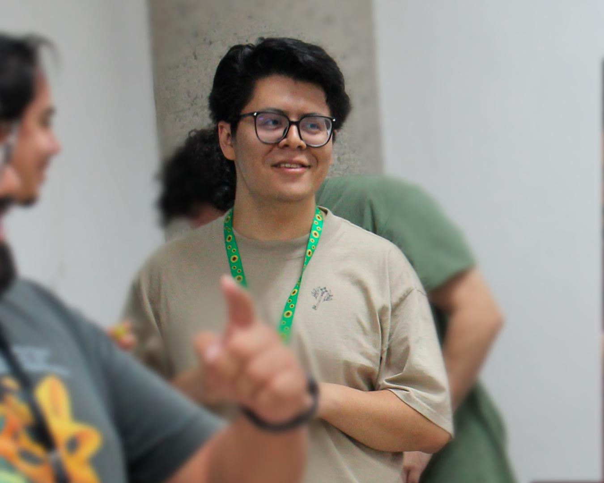

Hola. Soy un estudiante de doctorado en mi tercer año en la Universidad de Utah. Mis asesores son Srikanth Iyengar y Rachel Skipper.
Terminé mi Maestría en Ciencias en CIMAT bajo la supervisión de Pedro Luis del Ángel Rodríguez.
Mis intereses de investigación son álgebra conmutativa, álgebra homológica y teoría de representaciones.
También organizo, junto con Ethan Morgan, el Seminario de Álgebra Conmutativa para estudiantes (BIKES) en la Universidad de Utah.